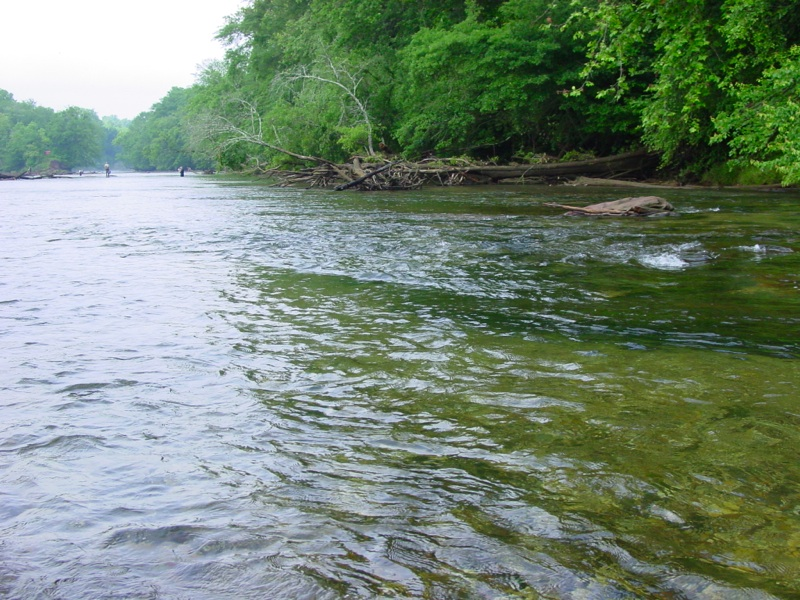
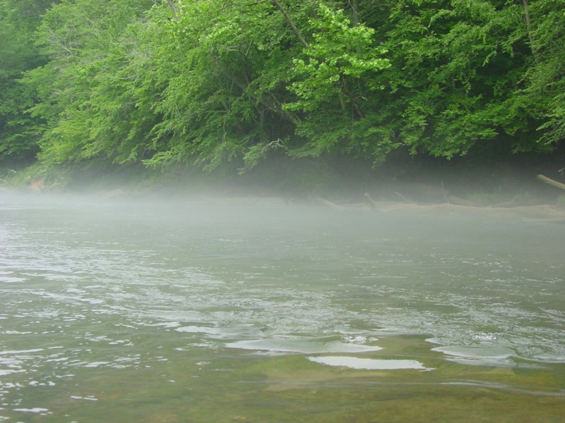
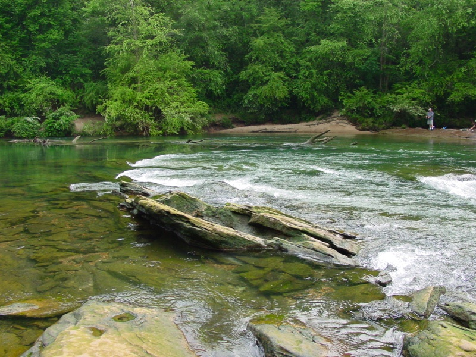
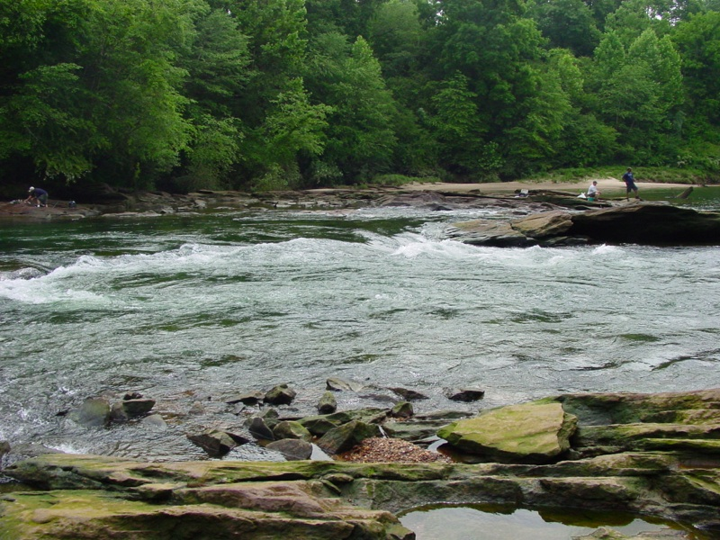
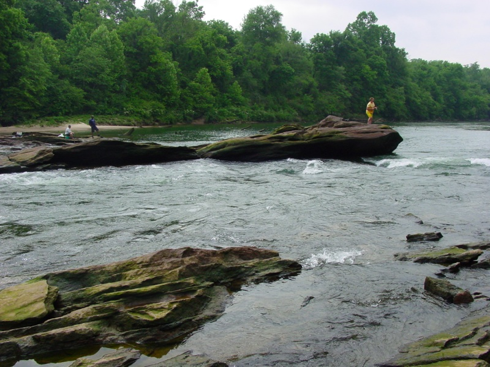
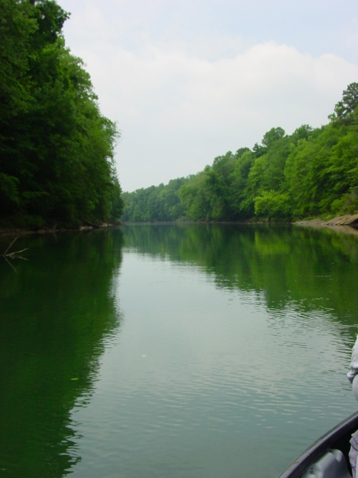
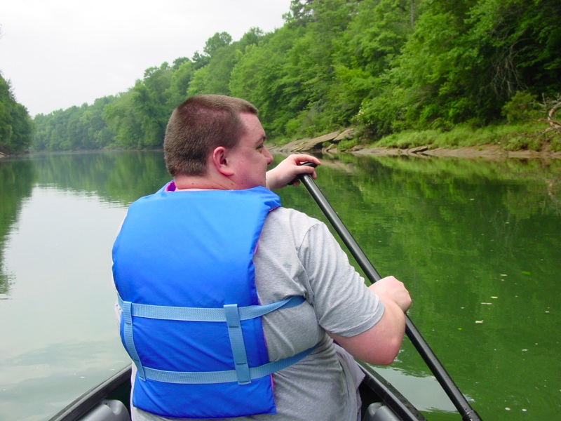

I've been talking about it for a good long while now, but I finally started my (multi-part) canoe journey thru Atlanta in the Chattahoochee River National Recreation Area. This is going to be a 50 mile journey which is detailed very well in the Park Service's Chattahoochee River map. I'm calling the overarching journey the ATL50. As my Coleman Scanoe (short for silly canoe?) needs two folks, unless I'm going to be in the middle of the canoe on my knees (which doesn't feel all that good after a few minutes), I need to give a big shout-out to Tony Mayes who was brave, or stupid, enough to come along with me. I should report that he repeated himself TWENTY TIMES that he was having a great time! We really did have a great little trip this morning.
I met up with Tony at his place around 8am and we headed for Buford Dam (in both cars) which is the start of this particular float. Of course, it would have been simple if we could just get the canoe off the roof and start floating, but... it NEVER is THAT simple. Yep, we had to lock up the canoe there and then drive to the stopping point for the day; Settles Bridge Park. Once we got down there we left Gretchen's CR-V (i.e. the car with the roof rack). Then... we drove back up to Buford Dam in Tony's car to finally start the trip. We finally hit the water around 9:45am.

The water was ICY COLD and very shallow here at the Buford Dam canoe launch. You can see the fishermen in the picture above just walking around. Rather quickly we were greeted with the fog remnants of the morning.

Other than the tons of spots where giant rocks are mere inches from the surface the water was very smooth an easy to navigate. We hit some "minor" rapids at the Bowmans Island Shoals that caused these two inexperienced "noobs" (as my son calls newbies) a bit of trouble. I had to get out – more than once! Did I say the water was ICY COLD?!?! The highlight of the rapids was at Fish Weir Shoals as shown in the next few photos.



I know; you're thinking these don't look too bad. I can tell you that after the trouble we had back up at Bowmans Island this little part of the river was looking 10 times tougher. Tony gave us on a 30% chance of flipping, but I was on the other side of the equation with an estimated 70% chance of getting completely wet – hey, did I mention that water was ICY COLD?!?! Despite Tony's enthusiasm, the "old guy" took a pass. We had a very creative portage exercise to get around this, but needless to say we finally got back in the water and were on our way again.
Truly, 95% of the ride was smooth paddling over calm water like you see below.

Of course, I got that shot by turning the canoe towards the bank as I'm sitting in the back. What was 95% of my view really? Yep, the back of Tony's head!!Nah, seriously, we had a blast!

Just after noon, we finished this 5-miler trip at Settles Bridge and yes, I forgot to take a picture of the actual old, abandoned, and mostly deconstructed, bridge itself. As it'll be the start of the next trip, I'll be sure to take some photos of it when we get back out on the river as it is a cool visual.
I created a Kayaking & Canoeing Google Map and it details this first leg very well. I'm going to update it with future legs, too.
I'll leave you with a picture that is indicative of the natural beauty you see up on this part of the Chattahoochee River. If you haven't been out on it, I hope you get a chance to check it out soon.
 I've been talking about it for a good long while now, but I finally started my (multi-part) canoe journey thru Atlanta in the Chattahoochee River National Recreation Area. This is going to be a 50 mile journey which is detailed very well in the Park Service's Chattahoochee River map. I'm calling the overarching journey the ATL50. As my Coleman Scanoe (short for silly canoe?) needs two folks, unless I'm going to be in the middle of the canoe on my knees (which doesn't feel all that good after a few minutes), I need to give a big shout-out to Tony Mayes who was brave, or stupid, enough to come along with me. I should report that he repeated himself TWENTY TIMES that he was having a great time! We really did have a great little trip this morning.
I've been talking about it for a good long while now, but I finally started my (multi-part) canoe journey thru Atlanta in the Chattahoochee River National Recreation Area. This is going to be a 50 mile journey which is detailed very well in the Park Service's Chattahoochee River map. I'm calling the overarching journey the ATL50. As my Coleman Scanoe (short for silly canoe?) needs two folks, unless I'm going to be in the middle of the canoe on my knees (which doesn't feel all that good after a few minutes), I need to give a big shout-out to Tony Mayes who was brave, or stupid, enough to come along with me. I should report that he repeated himself TWENTY TIMES that he was having a great time! We really did have a great little trip this morning.